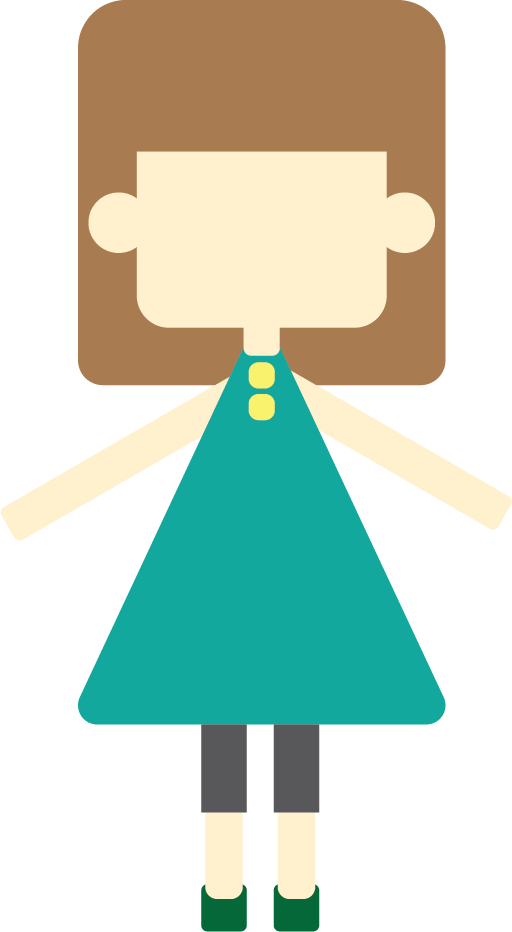
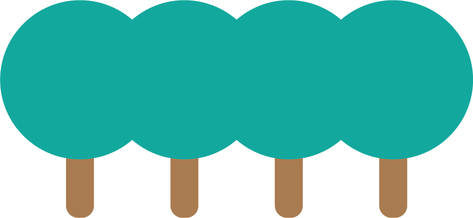
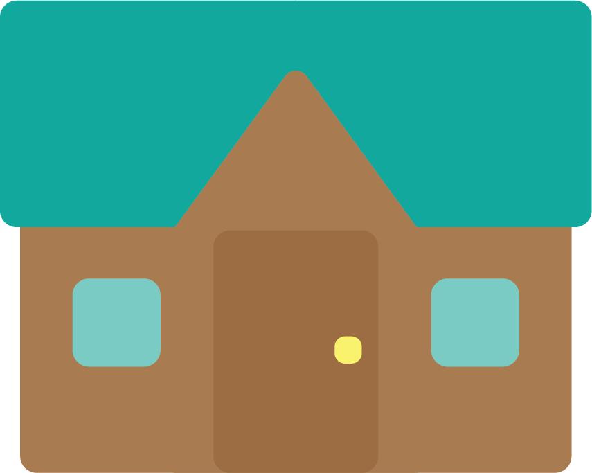
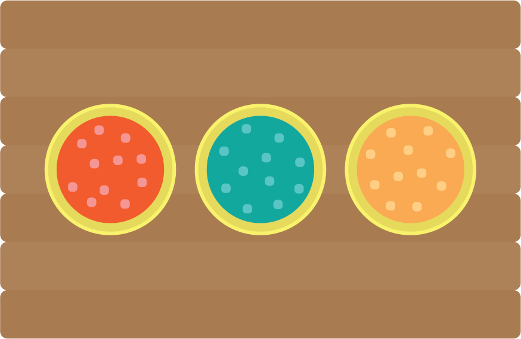
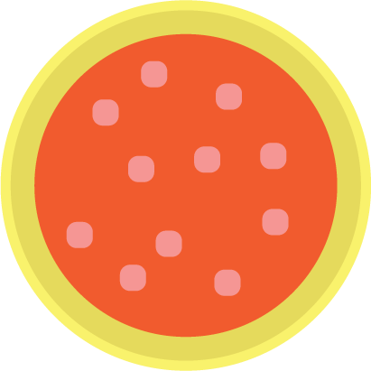
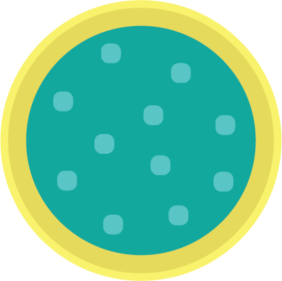
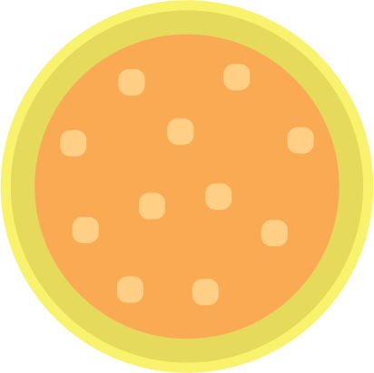
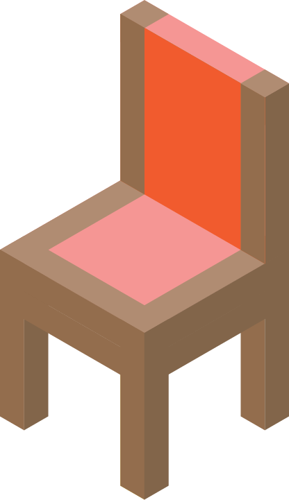
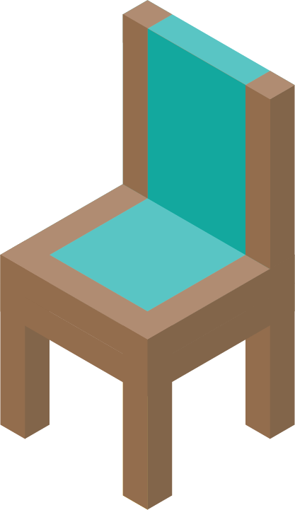
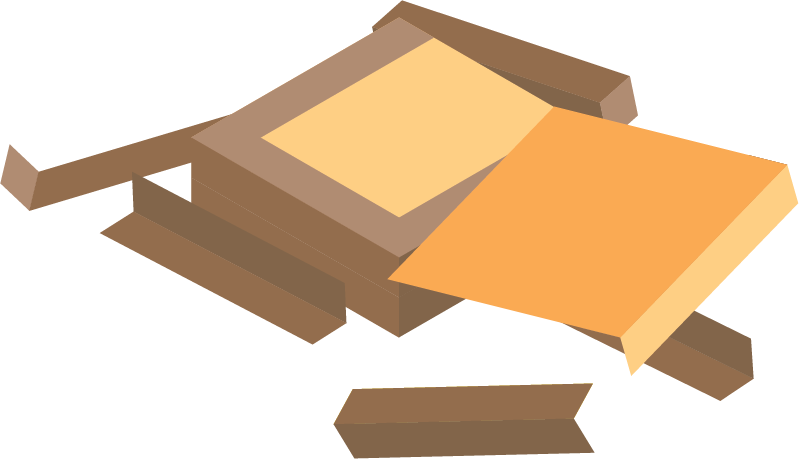

The Story of Goldilocks
and the Three Bears

Once upon a time, there was a little girl named Goldilocks.
Once upon a time, there was a little girl named Goldilocks.

She went for a walk in the forest.
She went for a walk in the forest.

Pretty soon, she came upon a house.
Pretty soon, she came upon a house.
She knocked and, when no one answered, she walked right in.

At the table in the kitchen, there were three bowls of porridge.
Goldilocks was hungry.
At the table in the kitchen, there were three bowls of porridge.
Goldilocks was hungry.

She tasted the porridge from the first bowl.
“This porridge is too hot!” she exclaimed.
She tasted the porridge from the first bowl.
“This porridge is too hot!” she exclaimed.

So, she tasted the porridge from the second bowl.
“This porridge is too cold,” she said
So, she tasted the porridge from the second bowl.
“This porridge is too cold,” she said

So, she tasted the last bowl of porridge.
“Ahhh, this porridge is just right,” she said happily
So, she tasted the last bowl of porridge.
“Ahhh, this porridge is just right,” she said happily
and she ate it all up.
After she’d eaten the three bears’ breakfasts
she decided she was feeling a little tired.

Goldilocks sat in the first chair to rest her feet.
“This chair is too big!” she exclaimed.
Goldilocks sat in the first chair to rest her feet.
“This chair is too big!” she exclaimed.

So she sat in the second chair.
“This chair is too big, too!” she whined.
So she sat in the second chair.
“This chair is too big, too!” she whined.

So she tried the last and smallest chair.
“Ahhh, this chair is just right,” she sighed.

But just as she settled down into the chair to rest,
it broke into pieces!
But just as she settled down into the chair to rest,
it broke into pieces!
_
But... if...
_